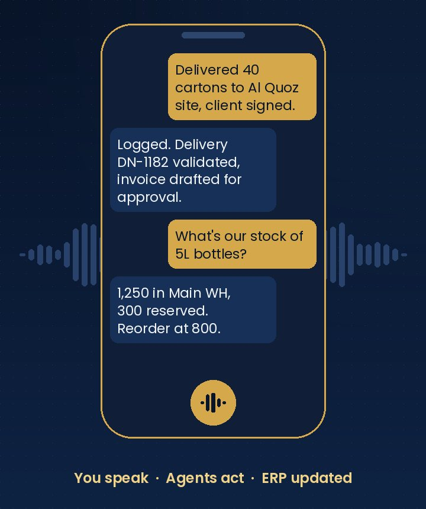
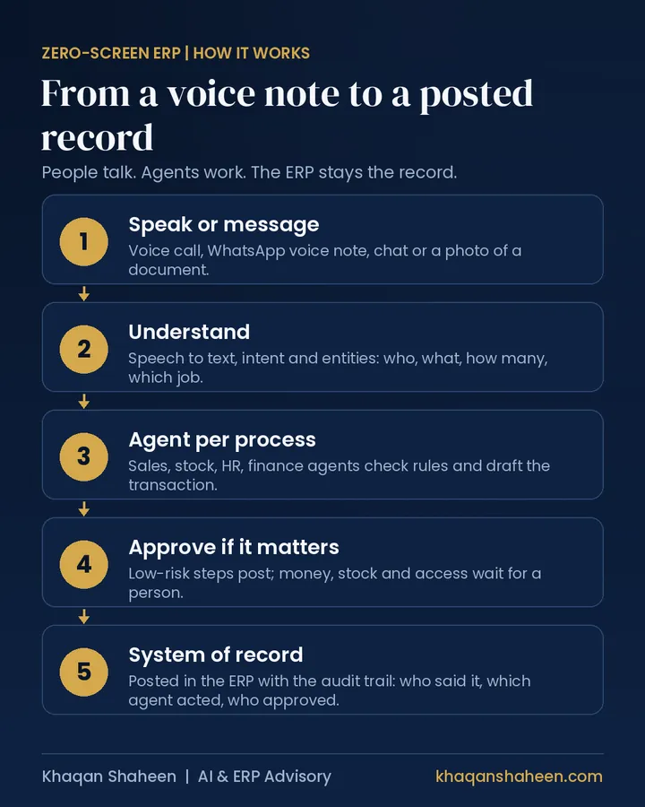
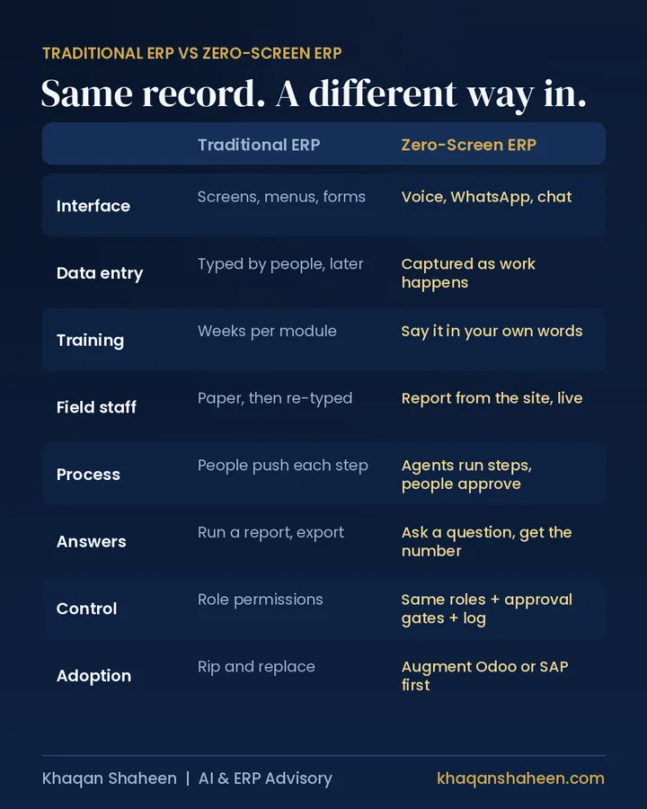
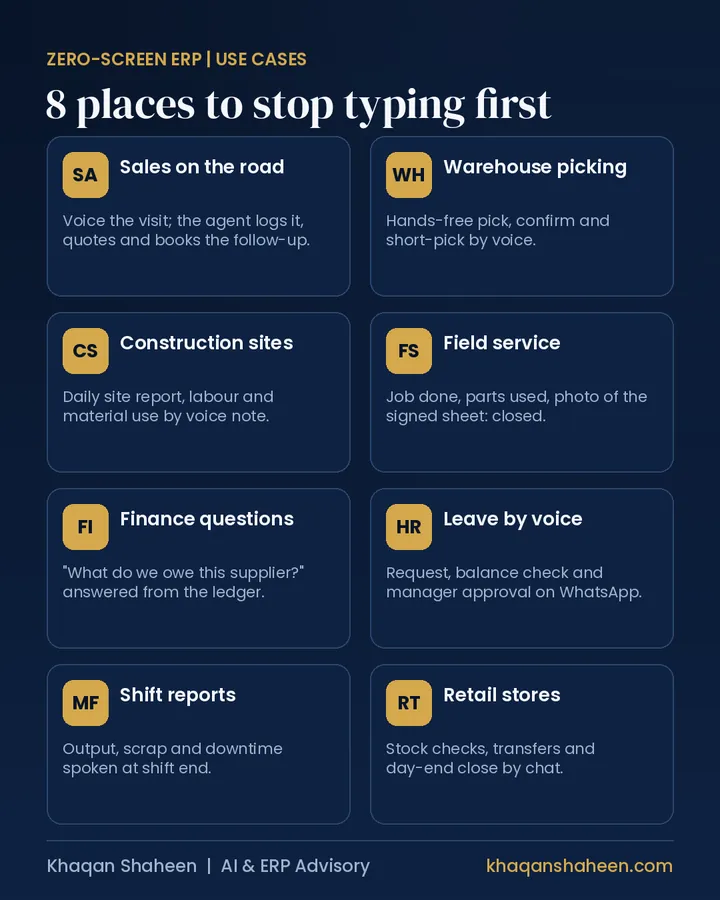
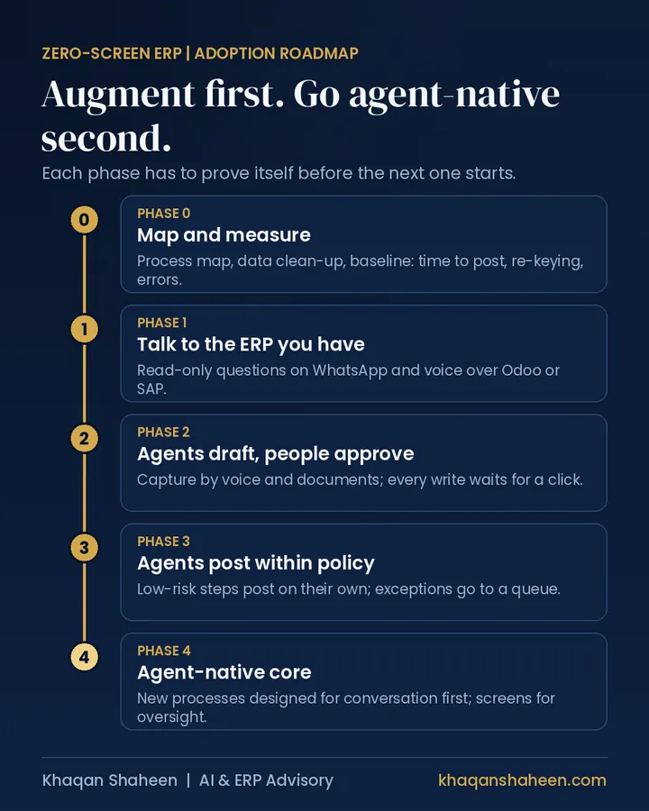

Zero-Screen ERP: run the business by speaking to it
Speak the work. Agents run the ERP.
Zero-Screen ERP is an agent-based ERP model. People log work, give instructions and ask questions by voice, WhatsApp or chat; AI agents, one per process, turn that into the right transaction, check it against the rules, ask a person to approve anything that touches money, stock or access, and post it to the ERP with a full audit trail. Nobody fills in a form, and the record builds itself as the work happens.

The problem: the ERP is only as current as the last person who typed
SAP, Oracle, Dynamics and Odoo are excellent systems of record with thousands of screens in front of them. The people who actually do the work (drivers, site supervisors, pickers, technicians, salespeople on the road) are rarely at those screens. They report on WhatsApp, on paper or by phone, and someone in the office types it in later. The record is late, the re-typing introduces errors, approvals get chased by message, and managers wait for reports that are out of date by the time they arrive. New joiners need weeks of training per module before they can enter anything correctly.
The solution: keep the record, replace the screens with a conversation
Zero-Screen ERP keeps your ERP, your chart of accounts, your stock record, your roles and your month-end close exactly where your accountants and auditors expect them. What changes is how data gets in and how answers get out. The person who did the work says what happened, in their own words, at the moment it happened. Agents do the typing, the checking and the chasing. Screens stay for oversight, approvals and analysis, not for data entry.
| Traditional ERP | Zero-Screen ERP | |
|---|---|---|
| Way in | Screens, menus, forms, transaction codes | Voice, WhatsApp, chat, photos of documents |
| Who enters data | Office staff, after the fact | The person doing the work, as it happens |
| Training | Per module, per role, for every new joiner | Say it in your own words; the agent asks for what is missing |
| Field and shop floor | Paper or messages, re-typed later | Reported from the site, the van or the line |
| Process flow | People push each step and chase approvals | Agents run the steps; people approve the ones that matter |
| Getting an answer | Find the report, filter, export | Ask the question, get the number and its source |
| Control | Role permissions on screens | The same roles, plus approval gates and a log of who said what |
| Adoption | Rip and replace, big-bang go-live | Augment the ERP you own, then go agent-native process by process |
How it works: six layers, in plain terms
- Speak or messageA voice call, a WhatsApp voice note, a chat message or a photo of a document. Users are recognised by their registered number or company sign-in.
- UnderstandSpeech to text in English, Arabic, Urdu or Hindi, then intent and entities: who, what, how many, where and which job.
- An agent per processSales, stock, purchasing, HR, finance and maintenance agents. Each knows only its own process, its rules and the records it may touch.
- Workflow layerThe deterministic steps, hand-offs, retries and notifications run in a workflow tool such as n8n or the ERP's own automation, not in a model's judgement.
- Approve what mattersReading and drafting are low risk. Money, stock, access and commitments to customers or suppliers wait for a named person, in the same WhatsApp thread.
- System of record and audit trailPosted through the ERP's own interfaces and validation, with the original message, the agent that drafted it and who approved it. Same roles as on screen.
The rule I run in production: every AI agent sits behind a human queue until it has earned its way out. Why every AI agent I run sits behind a human queue.


Use cases by department and sector
Sales on the road
A voice note after the visit: the agent logs it against the customer, drafts the quote and books the follow-up for the salesperson to confirm.
Warehouse voice picking
Hear the next pick, confirm the quantity by voice, report a short pick or damage without putting the scanner down.
Construction site managers
A spoken site diary with photos: labour, materials used against the BOQ, progress and delays, posted to the project.
Field service
Job done, parts used, time on site and a photo of the signed sheet: ticket closed, van stock updated, invoice drafted.
Finance questions
“What do we owe this supplier, and what is due this week?” answered from the ledger, with the same permissions as on screen.
HR leave by voice
The employee asks; the agent checks balance and team calendar; the manager approves in the WhatsApp thread.
Manufacturing shift reports
Output, scrap and downtime per machine spoken at shift end, posted against the work orders, outliers flagged.
Retail branches
Stock across branches, transfer requests and day-end close by chat, with a person confirming the figures.
Procurement
“We need 500 more of item B by Thursday”: budget and approved suppliers checked, purchase order drafted for approval.
Accounts payable
Supplier bills read by OCR, matched to the order and the goods receipt; only mismatches go to a person.
Maintenance
“Machine 4 is leaking oil” opens a work order with the machine, the reporter and the time, and alerts the lead.
Owners and managers
Ask on the way to a meeting how sales compare with last month and who is overdue; the answer comes with its source report.
Built on what already runs in production
I lead technology for a manufacturing group on one Odoo ERP across six sites in five countries. Five AI systems run on top of it every day, and each one removes a screen from someone's day:
- Document OCR into the ERP: supplier bills and expense claims read and posted instead of typed.
- Automated document verification before a person has to look.
- A 24 hour AI sales agent on WhatsApp and the web, qualifying enquiries into the pipeline.
- An AI voice agent on the corporate phone system.
- One multi-channel chat platform for several WhatsApp numbers and the group websites.
Zero-Screen ERP applies the same idea to every process, designed in from the start. Read the case study: five AI systems in daily production.
Roadmap: augment the ERP you own first, go agent-native second
- Phase 0Map and measure
Map where work gets re-typed, clean the master data, record the baseline KPIs, pick two or three high-volume, low-risk processes. - Phase 1Talk to the ERP you have
A read-only question and answer agent over your existing Odoo or SAP on WhatsApp and voice. Nothing is written yet. - Phase 2Agents draft, people approve
Capture by voice, message and document. Every write is a draft a person confirms with one tap. Audit trail from day one. - Phase 3Agents post within policy
Low-risk steps with a clean track record post on their own, inside limits you set. Exceptions go to a named owner. - Phase 4Agent-native core
New processes designed for conversation first. Screens kept for oversight, analysis and exceptions.


What to measure
I do not quote savings percentages for this. The gains depend on how much re-typing and chasing your business does today, so measure your own baseline in Phase 0 and track it phase by phase:
- Records re-typed by office staff each week
- Time from the event to the record in the ERP
- Correction rate on agent-drafted versus typed records
- Median approval time, and approvals waiting too long
- Share of field staff reporting through the channel
- Time to answer common management questions
- Share of agent actions that needed a person
- Days to close the month
Governance: what keeps it safe
Drafts before posts. Approval gates by risk level. Read-back confirmation for quantities, amounts and dates. Identity from the registered number or company sign-in, never from what a message claims. Agents act with the permissions of the person they serve, through the ERP's own roles. Content from documents and customers is treated as data, not instructions. Every agent has a named business owner, a named technical owner, monitoring and an off switch. Voice notes and messages follow clear retention rules in line with UAE data protection law.
Questions people ask about Zero-Screen ERP
What is Zero-Screen ERP?
Zero-Screen ERP is an agent-based ERP model in which people log work, give instructions and ask questions by voice, WhatsApp or chat, and AI agents run each business process and keep the ERP up to date, with a person approving anything that touches money, stock or access.
Is Zero-Screen ERP a product?
It is an approach and an architecture, not a single software product. It is built on top of an ERP a business already owns, such as Odoo or SAP, using conversation channels, AI agents, a workflow layer and approval rules.
How is an agent-based ERP different from a chatbot on an ERP?
A chatbot answers questions. In an agent-based ERP each process has an agent that drafts and, within policy, completes real transactions such as delivery notes, purchase orders, leave requests and timesheets, with approvals, permissions and an audit trail.
Does Zero-Screen ERP replace SAP or Odoo?
No, not at the start. The existing ERP stays the system of record. Zero-Screen ERP replaces data-entry screens with conversation. Only later, and only if it makes sense, are parts of the old interface simplified or retired.
Can it work with Odoo?
Yes. Agents read and write through Odoo's own interfaces, validation and access rules. I run a WhatsApp sales agent, an AI voice agent and document OCR alongside an Odoo ERP in daily production.
Can it work with SAP?
Yes, through SAP's standard interfaces and its own workflow and authorisation model. Agents draft through the ERP's interfaces and SAP's rules and roles still apply.
Is it safe to let AI agents post transactions?
Only with controls. Agents start by drafting for a person to approve. Money, stock, access and commitments to customers or suppliers stay behind a human approval, and every action is logged with who asked, which agent acted and who approved.
Which languages does it handle?
Current speech and language models handle English, Arabic, Urdu, Hindi and the other languages common on UAE sites. Each deployment should be tested on real recordings from the actual sites before it goes live.
Where should a business start?
With a process map and a baseline, then a read-only question and answer agent over the existing ERP on WhatsApp, then voice capture for two or three high-volume, low-risk processes where every write is approved by a person.
Who is Khaqan Shaheen?
Khaqan Shaheen is a Head of IT and AI transformation leader based in Dubai, CIO of the Year 2023, with more than ten years of ERP and Odoo work and five AI systems in daily production on one ERP across six sites in five countries. He advises companies in the UAE and GCC on AI, ERP and digital transformation.
How do I book a consultation?
Use the booking page to pick a time. The first conversation covers your current ERP, where your team re-types work today and which processes to start with.
Book a Zero-Screen ERP consultation
A first conversation covers your current ERP (Odoo, SAP or another), where your team re-types work today, and which two or three processes to start with. On-site in the UAE or remote across the GCC.
Follow Khaqan Shaheen | AI & ERP Advisory on LinkedIn. Related: from manual to ERP with AI · Odoo ERP consultant in Dubai · AI automation for operations.